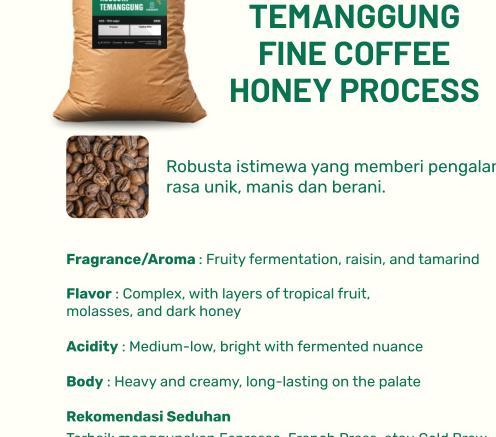
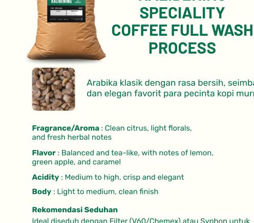
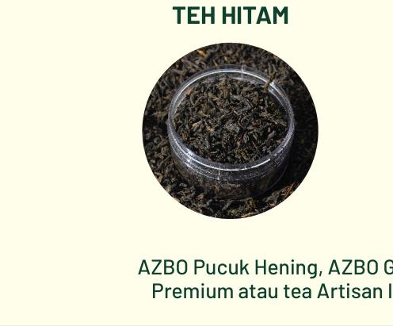
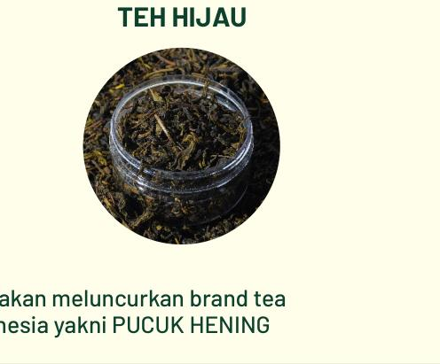
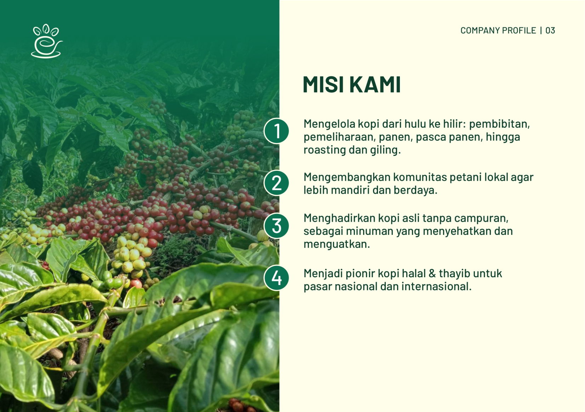
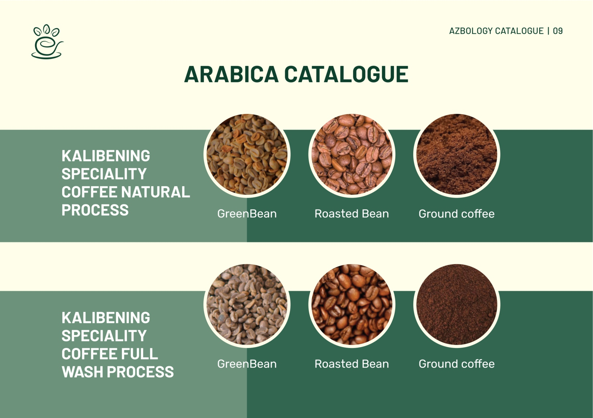
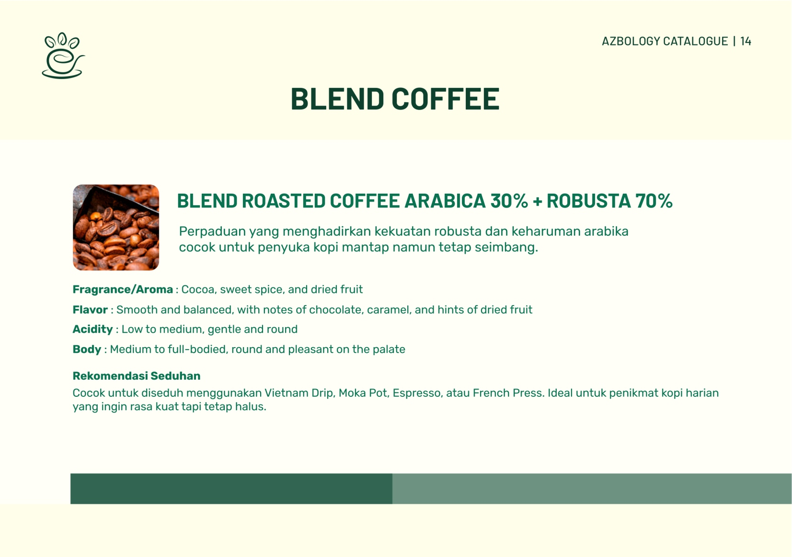

Direct partnerships with highland farmers in Temanggung and Kalibening. Full traceability for every bean and leaf.
Strict red-cherry picking, controlled fermentation, hygienic solar drying, and precision roasting profile.
Ensuring added value flows directly back to empower local farming families and sustain natural agroforestry.
Honest highland flavors from Mount Sindoro, Sumbing, and Kalibening. Crafted from farm to cup.
“The finest taste born from serenity.” Premium bud & two leaves standard for mindful tea moments.
Freshly roasted and carefully packed for the perfect cup.




It all began with local farmers needing a fair market for their harvests to support their families and educate their children. We stepped in to transform community harvests into high-value specialty products.
Indonesia is the world's 4th largest coffee producer, yet many smallholders remain disconnected from ethical trade. AZBO initiative bridges this gap by managing natural treasures in a halal, thayyib, and sustainable manner.
Through AZBOLOGY and Pucuk Hening, every cup you enjoy carries the blessing and livelihood of our partner farmers across Temanggung and Kalibening.


Direct on-field assistance to maintain natural volcanic soil fertility.
Only ripe cherries are picked, then processed with strict hygiene standards.
Carefully tailored roasting curves to highlight each origin's authentic notes.

Extract optimal aroma and flavor notes from every brew.
We supply consistent roasted coffee beans for cafes, premium artisan tea for fine dining & hotels, and customized corporate gift hampers worldwide.
B2B & Export Inquiry